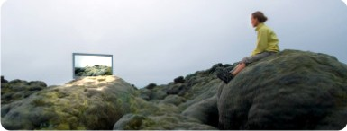

VideoExpress News • Número 1 • Abril de 2008
Otra forma
de ver la realidad
Nuestro editorial le da un vistazo a los acontecimientos de actualidad para que el lector pueda formarse una opinión a partir de un análisis claro y sin rodeos, haciendo un pronóstico de hacia adonde van a llegar los hechos e invitando a tomar una posición dada su trascendencia.
Sin embargo, al no ser la última palabra, los invitamos a que tomen nuestra forma de ver la realidad como un comentario para editar...

Un editorial
de Manuel Obando sobre un tema
de actualidad
que se ve claramente